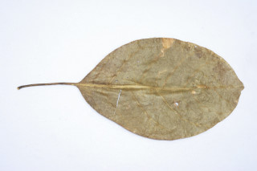
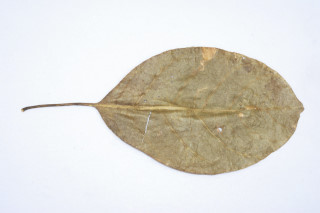

Large deciduous trees, buttressed, up to 40 m tall.
40 ಮೀ. ಎತ್ತರದವರೆಗೆ ಬೆಳೆಯುವ, ಆನಿಕೆಯುಳ್ಳ, ಎಲೆಯುದುರುವ ದೊಡ್ಡ ಗಾತ್ರದ ಮರಗಳು.
വപ്രമൂലത്തോടുകൂടിയ, 40 മീറ്റര് വരെ ഉയരത്തില് വളരുന്ന, ഇലപൊഴിക്കും വന് മരങ്ങള്.
மிக உயரமான இலையுதிர் மரங்கள், தாங்கு வேர்களுடையது (பட்ரஸ்டு), 40 மீ. உயரம் வரை வளரக்கூடியது.
Bark whitish, longitudinally fissured.
ತೊಗಟೆ ಬಿಳಿ ಬಣ್ಣ ಹೊಂದಿದ್ದು ಉದ್ದುದ್ದವಾಗಿ ಬಿರಿದ ಮಾದರಿಯಲ್ಲಿರುತ್ತದೆ.
നീളത്തിലുളള വിളളലുകളോടുകൂടിയ, വെളുത്ത പുറംതൊലി.
மரத்தின் பட்டை வெள்ளை நிறமானது, நீள்வாக்கில் வெடிப்புகளுடையது.
Branchlets terete, glabrous.
ಕಿರುಕೊಂಬೆಗಳು ದುಂಡಾಗಿದ್ದು ರೋಮರಹಿತವಾಗಿರುತ್ತವೆ.
അരോമിലമായ, ഉരുണ്ട ഉപശാഖകള്.
சிறிய நுனிக்கிளைகள் குறுக்குவெட்டுத் தோற்றத்தில் வளையம் போன்றது, உரோமங்களற்றது.
Leaves simple, alternate, spiral, clustered at the twig ends; petiole 3-10 cm long; flat above, with pair of sessile glands just above the middle, sometimes indistinct; lamina 8-20 x 4-14 cm, broad elliptic or broad obovate, apex rounded to abruptly short acuminate, base cuneate, margin entire, coriaceous, pubescent, when young on both sides, later glabrous; midrib flat above; secondary_nerves 6-8 pairs, gradually curved; tertiary_nerves reticulo-percurrent.
ಎಲೆಗಳು ಸರಳವಾಗಿದ್ದು ಪರ್ಯಾಯ ಹಾಗೂ ಸುತ್ತು ಜೋಡನಾ ವ್ಯವಸ್ಥೆ ಯಲ್ಲಿದ್ದು ಕುಡಿಕೊಂಬೆಗಳ ತುದಿಯಲ್ಲಿ ಗುಂಪಾಗಿರುತ್ತವೆ; ಎಲೆ ತೊಟ್ಟುಗಳು 3 ರಿಂದ 10 ಸೆಂ.ಮೀ. ಉದ್ದವಿದ್ದು ಮೇಲ್ಭಾಗದಲ್ಲಿ ಚಪ್ಪಟೆಯಾಗಿರುತ್ತವೆ ಹಾಗೂ ಮಧ್ಯಭಾಗಕ್ಕಿಂತ ಕೊಂಚ ಮೇಲೆ ಜೋಡಿ ರಸಗ್ರಂಥಿಗಳನ್ನು ಹೊಂದಿರುತ್ತವೆ, ಕೆಲವು ವೇಳೆ ಜೋಡಿ ರಸಗ್ರಂಥಿಗಳು ಅಸ್ಪಷ್ಟವಾಗಿರುತ್ತವೆ; ಪತ್ರಗಳು 8-20 X 4-14 ಸೆಂ.ಮೀ. ಗಾತ್ರ ಹೊಂದಿದ್ದು ವಿಶಾಲವಾದ ಅಂಡವೃತ್ತಾಕಾರ ಅಥವಾ ವಿಶಾಲವಾದ ಬುಗುರಿಯಾಕಾರದಲ್ಲಿದ್ದು ,ಚೂಪಾಗಿರುವುದರಿಂದ ಹಿಡಿದು ಕಿರಿದಾದ ಹಾಗೂ ಕ್ರಮೇಣವಾಗಿ ಚೂಪಾಗುವ ಮಾದರಿಯ ತುದಿ, ಬೆಣೆಯಾಕಾರದ ಬುಡವನ್ನು ಹೊಂದಿರುತ್ತವೆ ; ಪತ್ರಗಳು ತೊಗಲನ್ನೋಲುವ ಮೇಲ್ಮೈ ಇದ್ದು ಎಳೆಯದಾಗಿದ್ದಾಗ ಎರಡೂ ಬದಿಯಲ್ಲಿ ಮೃದುತುಪ್ಪಳದಿಂದ ಕೂಡಿದ್ದು ನಂತರ ರೋಮರಹಿತವಾಗುತ್ತವೆ; ಮಧ್ಯನಾಳ ಪತ್ರದ ಮೇಲ್ಭಾಗ ದಲ್ಲಿ ಚಪ್ಪಟೆಯಾಗಿರುತ್ತದೆ;ಎರಡನೇ ದರ್ಜೆಯ ನಾಳಗಳು 6 ರಿಂದ 8 ಜೋಡಿಗಳಿದ್ದು ಕ್ರಮೇಣವಾಗಿ ಬಾಗಿರುತ್ತವೆ;ಮೂರನೇ ದರ್ಜೆಯ ನಾಳಗಳು ಜಾಲಬಂಧನಾಳ ವಿನ್ಯಾಸದಲ್ಲಿದ್ದು ಎಲೆದಿಂಡಿಗೆ ಅಡ್ಡವಾಗಿ ಕೂಡುವಂತಹವು.
ഇലകള് ലഘുവും, ഏകാന്തരക്രമത്തില്, വര്ത്തുളമായി, കമ്പുകളുടെ അറ്റത്ത് കൂട്ടമായി ക്രമീകരിച്ചിരിക്കുന്ന വിധത്തിലാണ്; ഇലഞെട്ട് 3 സെ.മീ മുതല് 10 സെ.മീ വരെ നീളമുളളതും മുകളില് പരന്നതും, മധ്യത്തിന് അല്പ്പം മുകളിലായി ഒരു ജോഡി, അവൃന്ത ഗ്രന്ഥികളോടുകൂടിയതുമാണ്, ഗ്രന്ഥികള് ചിലപ്പോള് അവ്യക്തമാണ്; പത്രഫലകത്തിന് 8 സെ.മീ മുതല് 20 സെ.മീ വരെ നീളവും 4 സെ.മീ മുതല് 14 സെ.മീ വരെ വീതിയുമാണ്, ആകൃതി, വീതിയേറിയ ദീര്ഘ വൃത്താകാരമോ വീതിയേറിയ അപഅണ്ഡാകാരമോ ആണ്, പത്രാഗ്രം വൃത്താകാരത്തിലോ, മുനപ്പില്ലാത്ത ചെറുവാലോട് കൂടിയതോ ആണ്, പത്രാധാരം ആപ്പാകാരത്തിലാണ്, അരികുകള് അവിഭജിതമാണ്, ചര്മ്മില പ്രകൃതം, ഇളതായിരിക്കുമ്പോള് ഇരുഭാഗവും ലഘുവായി രോമിലമാണ്, പിന്നീട് അരോമിലമാണ്; മൂഖ്യസിര മുകളില് പരന്നാണിരിക്കുന്നത്; സാവധാനത്തില് വളഞ്ഞ് പോകുന്ന 6 മുതല് 8 വരെ ജോഡി ദ്വിതീയ ഞരമ്പുകള്; ത്രിതീയ ഞരമ്പുകള് ജാലിത-പെര്കറന്റ് വിധത്തിലാണ്.
இலைகள் தனித்தவை, மாற்றுஅடுக்கமானவை, சுழல் போல் அமைந்தவை, நுனிக்கிளையில் இலைகள் கூட்டமாக மற்றும் நெருக்கமாகமைந்தவை; இலைக்காம்பு 3-10 செ.மீ. நீளமானது, குறுக்குவெட்டுத் தோற்றத்தில் பிளேனோகான்வக்ஸ், ஒர் ஜோடி காம்பில்லா சுரப்பிகளுடையது; இலை அலகு 8-20 X 4-14 செ.மீ., அகன்ற நீள்வட்ட அல்லது அகன்ற தலைகீழ் முட்டை வடிவானது, அலகின் நுனி வட்டமானது முதல் சிறிய அதிக்கூரிய நுனியுடையது, அலகின் தளம் ஆப்பு வடிவமானது, அலகின் விளிம்பு முழுமையானது, கோரியேசியஸ்; முதிர்ச்சியடையும் முன் இலையின் இருபுறங்களும் உரோமங்களுடையது, பிறகு உரோமங்களற்றது; மையநரம்பு அலகின் பரப்பிற்கு சமமானது; இரண்டாம் நிலை நரம்புகள் 6-8 ஜோடிகள், நன்றாக படிப்படியாக வளைந்தது; மூன்றாம் நிலை நரம்புகள் வலைப்பின்னல்-பெர்க்கரண்ட்.
Inflorescence axillary spikes; flowers sessile, creamy white.
ಪುಷ್ಪಮಂಜರಿ ಅಕ್ಷಾಕಂಕುಳಿನಲ್ಲಿರುವ ಕದಿರುಮಂಜರಿ ಮಾದರಿಯವು; ಹೂಗಳು ತೊಟ್ಟುರಹಿತವಾಗಿದ್ದು ಕೆನೆಬಣ್ಣ ಹೊಂದಿರುತ್ತವೆ.
പൂങ്കുലകള് കക്ഷീയ സൈ്പക്കുകളാണ്; പൂക്കള് അവൃന്തവും ക്രീം-വെളുപ്പുനിറത്തിലുമാണ്.
இலைக்கோணங்களிலுள்ள ஸ்பைக் மஞ்சரி; மலர்கள் காம்பற்றவை, கிரீம் போன்ற வெள்ளை நிறமானது.
Drupe, globose or ovoid, slightly 5 ridged, 3 cm across; 1-seeded.
ಕಾಯಿಗಳು ಡ್ರೂಪ್ ಮಾದರಿಯಲ್ಲಿದ್ದು, 5 ಸೆಂ.ಮೀ ಅಡ್ಡಗಲದ ಅಳತೆ ಮತ್ತು ಗೋಳಾಕಾರ ಅಥವಾ ಅಂಡಾಕಾರ ಹೊಂದಿರುತ್ತದೆ ಹಾಗೂ 5 ಏಣುಗಳುಳ್ಳ ಮೇಲ್ಮೈ ಸಮೇತವಾಗಿರುತ್ತವೆ; ಬೀಜಗಳ ಸಂಖ್ಯೆ ಒಂದು.
ഒറ്റ വിത്തുമാത്രം മുള്ള കായ, 3 സെ.മീ കുറുകേയുളള, ലഘുവായി അഞ്ച് വരമ്പുകളോടുകൂടിയ ഗോളാകാരമോ അണ്ഡാകാരമോ ഉളള ഡ്രൂപ്പ് ആണ്.
உள்ளோட்டுத்தசைகனி (ட்ரூப்), கோள அல்லது முட்டை வடிவானது, சிறிது 5 தழும்புகளுடையது, 3 செ.மீ. குறுக்களவுடையது; ஓர் விதையுடையது.


 
